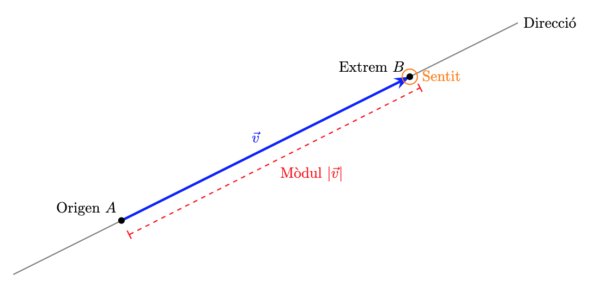
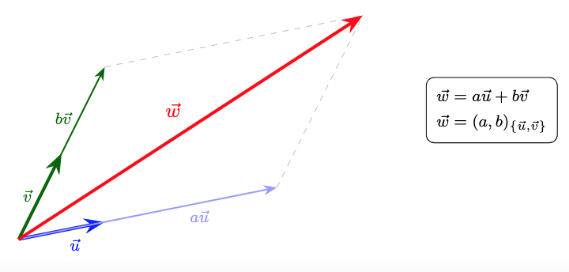
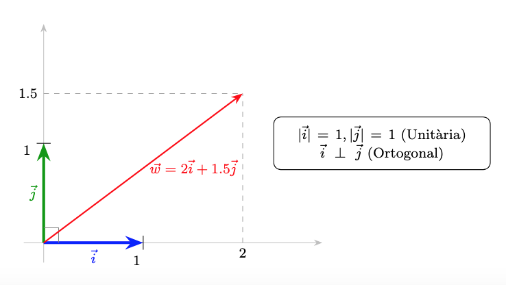
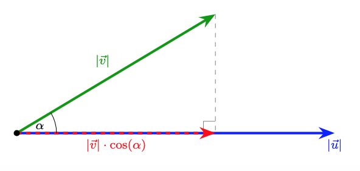

Els Vectors al Pla
1. Necessitat de les magnituds vectorials
No totes les magnituds físiques es poden descriure completament amb un sol número (magnitud escalar, com la massa o la temperatura). N'hi ha d'altres que necessiten altra informació: la direcció i el sentit.
Exemples
- Velocitat: Dir que un avió vola a 800 km/h és insuficient; necessitem saber en quina direcció ho fa (per exemple, la línia Barcelona-París) i en quin sentit (cap al Nord o cap al Sud).
- Força (direcció): Si empenys un objecte amb una força \(\vec{F}\), el resultat serà diferent si empenys cap a la dreta (per moure'l) o cap avall (per aixafar-lo).
- Força (sentit): Si vols obrir una porta, a banda del mòdul i la direcció de la força, cal un sentit. En un sentit s'obre i en l'altre es tanca.
2. Definició de vector
Geomètricament, un vector \(\vec{v}\) es pot representar com un segment orientat (com una fletxa). Un vector es caracteritza per tenir:
- Mòdul: La longitud del segment. Es representa com \(|\vec{v}|\).
- Direcció: La recta que conté el segment o qualsevol de les seves paral·leles.
- Sentit: Indicat per la punta de la fletxa.
Gràficament podem observar les característiques d'un vector de la següent forma:

3. Operacions geomètriques amb vectors
- Producte per un escalar: El producte d'un número (un escalar) \(k\) per un vector \(\vec{u}\) és un nou vector \(k \cdot \vec{u}\) amb la mateixa direcció. Si \(k>0\), el sentit es manté, en canvi, si \(k < 0\), el sentit s'inverteix. El mòdul del vector quedarà multiplicat per \(k\):
- Vector oposat: El vector \(-\vec{u}\) té el mateix mòdul i direcció que \(\vec{u}\), però el sentit contrari. En definitiva, s'obté multiplicant \(\vec{u}\) per \(-1\)

- Suma de vectors: Es defineix geomètricament col·locant l'origen de \(\vec{v}\) a l'extrem de \(\vec{u}\). El vector suma \(\vec{u} + \vec{v}\) és el que va de l'origen de \(\vec{u}\) a l'extrem de \(\vec{v}\).
En la representació següent observem la representació de la suma de dos vectors. A més, podem veure la commutativitat d'aquesta operació:

- Resta de vectors: La resta s'entén com la suma del primer amb l'oposat del segon: \(\vec{u} - \vec{v} = \vec{u} + (-\vec{v})\)
4. Combinació i independència lineal
- Combinació lineal: Un vector \(\vec{w}\) és combinació lineal de \(\vec{u}\) i \(\vec{v}\) si existeixen dos nombres \(a, b\) tals que: \(\vec{w} = a\vec{u} + b\vec{v}\)
-
Independència lineal: Dos vectors \(\vec{u}\) i \(\vec{v}\) són linealment independents si no tenen la mateixa direcció. Al pla, qualsevol parell de vectors independents formen una base.
-
Donada una base, tots els vectors es poden escriure, de forma única, com a combinació lineal dels vectors de la base. O sigui, tot vector \(\vec{w}\) és pot escriure com \(\vec{w} = a\vec{u} + b\vec{v}\) per a algun valor d'\(a\) i \(b\). D'aquesta forma podem associar \((a,b)\) al vector \(\vec{w}\) i en diem les components del vector.
A la següent representació, ho veurem tot plegat: \(\vec{u}\) i \(\vec{v}\) són dos vectors linealment independents i, per tant, són base. \(\vec{w}\) s'escriu com a combinació lineal de la base \(\{\vec{u},\vec{v}\}\) com \(\vec{w} = a\vec{u} + b\vec{v}\) i, per tant, el podem expressar en components de la forma: \(\vec{w}=(a,b)\)

5. Base ortonormal
Per treballar, utilitzarem una base concreta que ens facilitarà alguns càlculs: la base ortonormal. Diem que una base és ortonormal si els vectors d'aquesta base, que es representen amb \(\vec{i}\) i \(\vec{j}\), compleixen:
- \(\vec{i}\) i \(\vec{j}\) són ortogonals (perpendiculars) (\(\vec{i} \perp \vec{j}\)).
- \(\vec{i}\) i \(\vec{j}\) tenen mòdul unitari (\(|\vec{i}| = 1\) i \(|\vec{j}| = 1\)).
Qualsevol vector es pot escriure com a combinació lineal d'aquests: \(\vec{v} = v_x \vec{i} + v_y \vec{j} = (v_x, v_y)\).
En la següent representació podem veure les propietats de la base ortonormal \(\{\vec{i},\vec{j}\}\) i la representació del vector \(\vec{w}=(2,1.5)\)

6. Operacions amb components
Donats els vectors \(\vec{u} = (u_x, u_y)\) i \(\vec{v} = (v_x, v_y)\):
- Suma: \(\vec{u} + \vec{v} = (u_x + v_x, u_y + v_y)\)
- Resta: \(\vec{u} - \vec{v} = (u_x - v_x, u_y - v_y)\)
- Producte per escalar: \(k \cdot \vec{u} = (k \cdot u_x, k \cdot u_y)\)
- Combinació lineal: \(a\vec{u} + b\vec{v} = (a \cdot u_x + b \cdot v_x, a \cdot u_y + b \cdot v_y)\)
Exemple:
Donats els vectors \(\vec{u} = (3, 1)\) i \(\vec{v} = (1, 2)\), calculem les operacions bàsiques:
1. Suma. Sumem component a component:
2. Resta. Restem component a component:
3. Producte per un escalar. Multipliquem el vector \(\vec{u}\) per l'escalar \(k = 2\):
4. Combinació lineal: (\(2\vec{u} + 3\vec{v}\)). Primer multipliquem i després sumem els resultats:
- \(2\vec{u} = (6, 2)\)
- \(3\vec{v} = (3, 6)\)
- \(2\vec{u} + 3\vec{v} = (6 + 3, 2 + 6) = \mathbf{(9, 8)}\)
7. Producte escalar
El producte escalar, \(\vec{u} \cdot \vec{v}\), és una operació que pren dos vectors i té com a resultat un nombre (un escalar). Si \(\alpha\) és l'angle entre \(\vec{u}\) i \(\vec{v}\), és defineix com:
En la següent representació, podeu observar els vectors \(\vec{u}\) (blau), \(\vec{v}\) (verd) i el vector projecció de \(\vec{v}\) sobre \(\vec{u}\) (vermell). També s'indiquen els mòduls d'aquests tres vectors. El producte escalar és essencialment un producte de mòduls, però només es considera un vector (de mòdul \(|\vec{u}|\)) i la projecció de l'altre sobre el primer (de mòdul \(|\vec{v}| \cdot \cos \theta\))

8. Propietats del producte escalar
Siguin \(\vec{u}\), \(\vec{v}\) i \(\vec{w}\) vectors i \(k\) un nombre real (escalar):
- Commutativa: \(\vec{u} \cdot \vec{v} = \vec{v} \cdot \vec{u}\)
- Distributiva respecte la suma: \(\vec{u} \cdot (\vec{v} + \vec{w}) = \vec{u} \cdot \vec{v} + \vec{u} \cdot \vec{w}\)
- Associativa amb escalars: \(k \cdot (\vec{u} \cdot \vec{v}) = (k\vec{u}) \cdot \vec{v} = \vec{u} \cdot (k\vec{v})\)
Exemple
Calculem el producte escalar del vector \(\vec{w}\) per la combinació lineal \(3\vec{u} - 2\vec{v}\).
Dades: \(\vec{w} = (2, -1), \quad \vec{u} = (3, 2), \quad \vec{v} = (1, 4)\)
Mètode 1: Aplicant la propietat distributiva. Aquesta és la via més directa si ja coneixem els productes individuals:
- Calculem \(\vec{w} \cdot \vec{u}\): \((2 \cdot 3) + (-1 \cdot 2) = 6 - 2 = 4\)
- Calculem \(\vec{w} \cdot \vec{v}\): \((2 \cdot 1) + (-1 \cdot 4) = 2 - 4 = -2\)
- Substituïm: \(3(4) - 2(-2) = 12 + 4 = \mathbf{16}\)
Mètode 2: Resolent primer el parèntesi
- Calculem la combinació lineal:
- Fem el producte escalar final amb \(\vec{w}\):
Conclusió: Ambdós mètodes arriben al mateix resultat (16), confirmant que la propietat distributiva.
9. Ortogonalitat i producte escalar
Si dos vectors \(\vec{u}\) i \(\vec{v}\) son ortogonals (formen un angle \(\alpha = 90^\circ\)), llavors el seu producte escalar val \(0\):
De fet, a l'inrevés també és cert. Si el producte escalar de dos vectors és \(0\), llavors són ortogonals:
El signe del producte escalar també queda determinat pel valor del cosinus ja que els mòduls \(|\vec{u}|\) i \(|\vec{v}|\) sempre són positius i, per tant, l'únic element que pot canviar de signe és el cosinus.
10. Càlcul del producte escalar en base ortonormal
Quan treballem en una base ortonormal, el producte escalar es simplifica a la suma dels productes de les seves components. Donats els vectors \(\vec{u} = (u_x, u_y)\) i \(\vec{v} = (v_x, v_y)\):
Exemple:
Considerem els vectors \(\vec{u}\) i \(\vec{v}\) expressats en les seves components en base ortonormal: \(\vec{u} = (3, -2) \quad \text{i} \quad \vec{v} = (5, 4)\)
Multipliquem les components \(x\) entre elles i les components \(y\) entre elles, i després sumem els resultats:
11. Càlcul del mòdul en base ortonormal
Donat el vector \(\vec{u} = (u_x, u_y)\) en base ortonormal, el mòdul del vector \(\vec{u}\) es calcula:
Exemple:
Donat el vector \(\vec{u} = (-4, 3)\), volem calcular la seva longitud o mòdul (\(|\vec{u}|\)).
12. Angle entre dos vectors
Podem calcular l'angle \(\alpha\) que formen dos vectors \(\vec{u}\) i \(\vec{v}\) combinant les expressions anteriorment vistes:
Exemple:
Volem trobar l'angle \(\alpha\) que formen els vectors:
\(\vec{u} = (2, 0) \quad \text{i} \quad \vec{v} = (1, \sqrt{3})\)
1. Càlcul del producte escalar (\(\vec{u} \cdot \vec{v}\)):
2. Càlcul dels mòduls:
3. Aplicació de la fórmula de l'angle:
4. Resultat final:
13. Vectors unitaris
Donat un vector \(\vec{u}\) de mòdul \(|\vec{u}|\), molts cops ens pot interessar calcular el seu vector unitari associat. O sigui, un vector del mateix sentit i direcció que \(\vec{u}\), però de mòdul \(1\) (unitari). Aquest procés s'anomena normalitzar el vector \(\vec{u}\). Per calcular el vector unitari associat a \(\vec{u}\), només cal dividir-lo per seu mòdul:
Exemple
Donat el vector \(\vec{u} = (3, 4)\), troba el seu vector unitari.
1. Calculem el mòdul de \(\vec{u}\):
2. Dividim les components pel mòdul: